Digimon exhibition
@tag(anime)
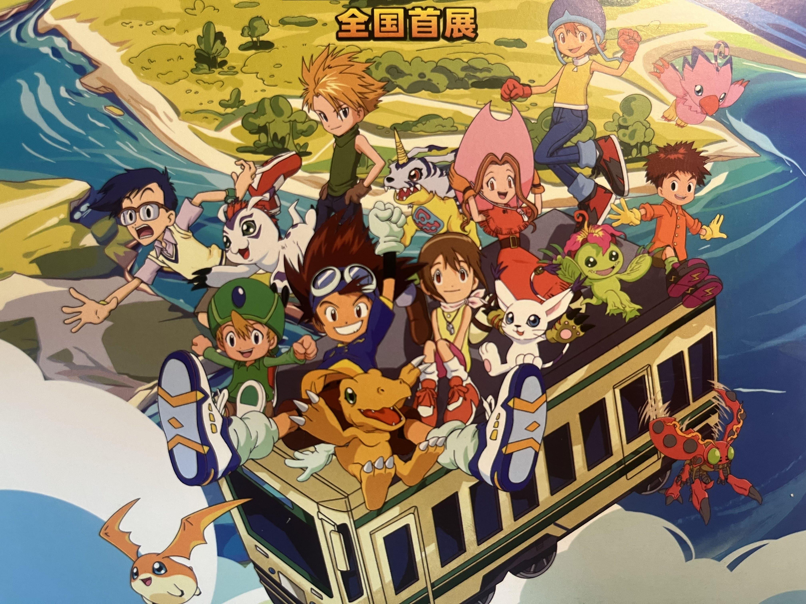
今天看到了数码宝贝的展览，就顺道去参观了一下；整体办的内容有限（甚至有点简陋，电话亭居然不能用！），不过确实勾起了不少回忆。 似乎基本主要是90年代末左右的人会关注digimon，大概是因为那段时间电视上有播放吧。
整个展厅是顺着动画的剧情时间轴去布置的，每个展厅代表一个动画的篇章： 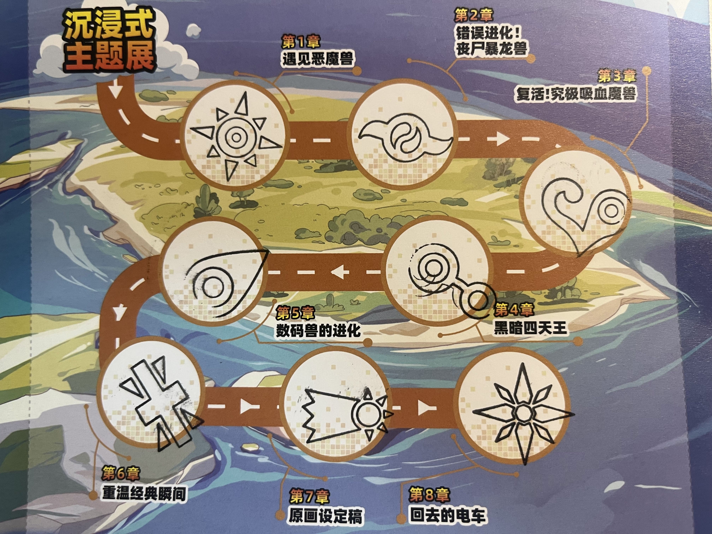
一开始看到的是成长期的进化画面(巴鲁兽卖萌ing) 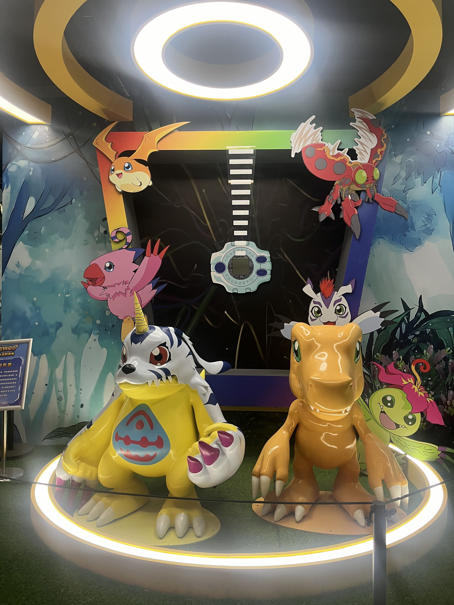 还记得幼年期第一期进化的场景（虽然在悬崖边掉到了河里）。
在理解了数码宝贝世界基本的世界观之后，我们的小队很快遇到了恶魔兽。小时候觉得恶魔兽引诱孩子们进别墅的情节非常经典，其中有幅画似乎在暗示天使与恶魔同在。 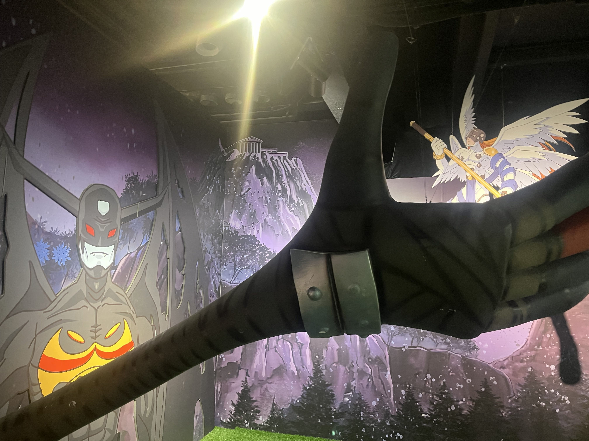
接下来我们就遇到了悟空兽，除了悟空兽的出场BGM之外，我印象最深的还是暴龙兽的错误进化，这也让太一第一次开始思考鲁莽与勇气之间的区别。 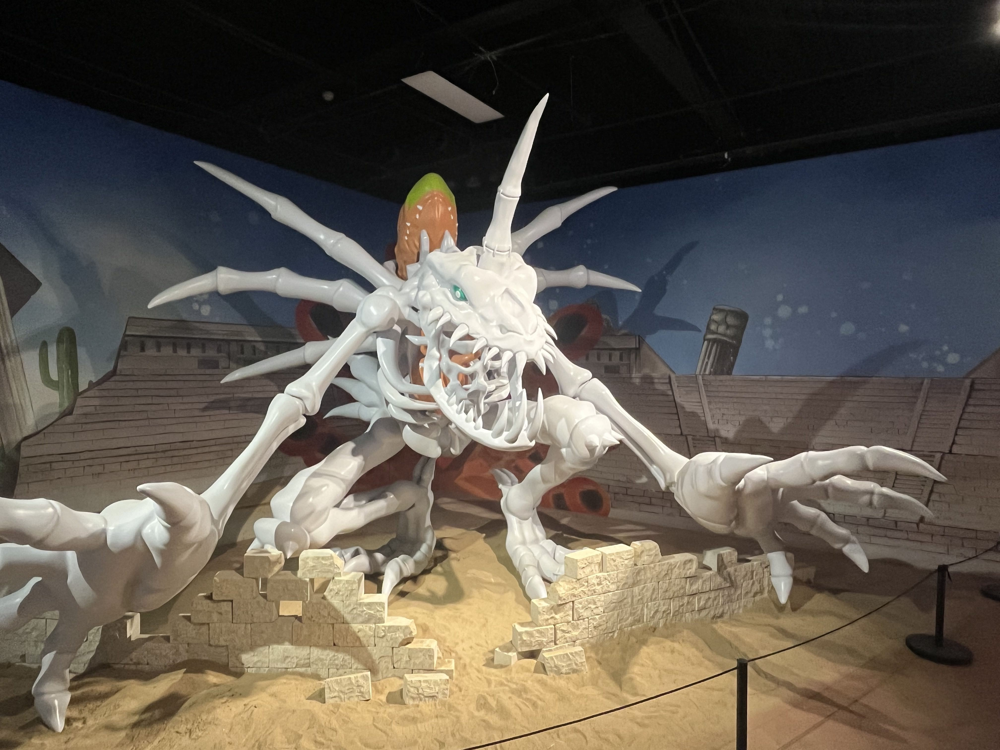
除了恶魔，西方另一个经典的形象就是吸血鬼，所以接下来我们又遇到了吸血魔兽，某种意义上算是恶魔兽的加强版，也是这一段剧情了拓展了数码宝贝的世界观，发现数码世界是与现实世界相连的（这一设定十分超前，其中也深化了动画的主题，引入了家庭、父母、同龄人、虚拟与现实之间的关系探讨）： 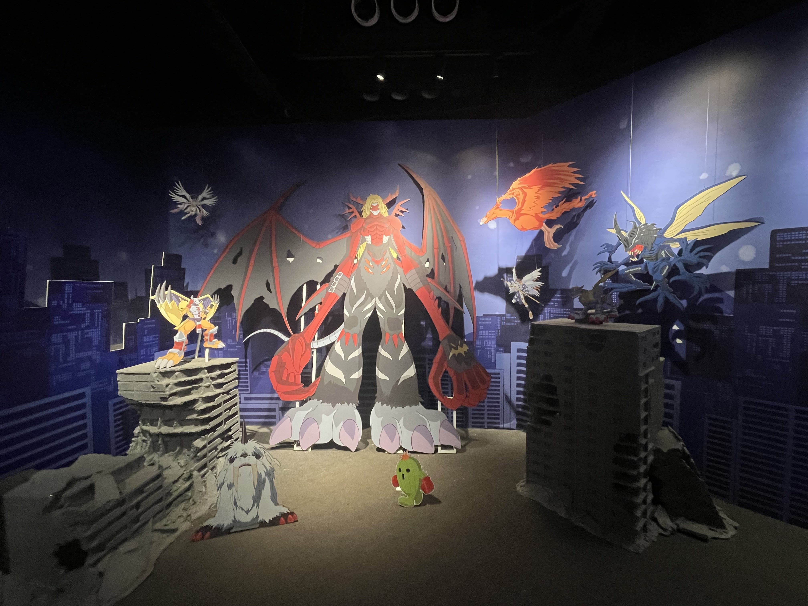
可惜没有看到南瓜兽和矿石兽的万圣节之旅，我永远也忘不了这个情节。
正当我们以为打败吸血魔兽就可以恢复虚拟与现实之间的秩序之时，又出现了黑暗四天王，其中我印象最深的还是小丑皇，最绝望的时刻，只剩下希望： 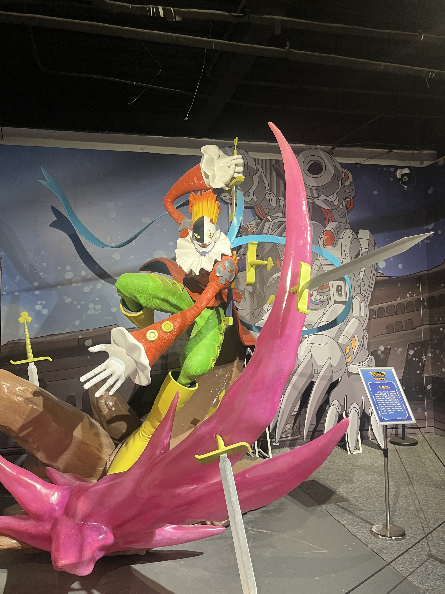 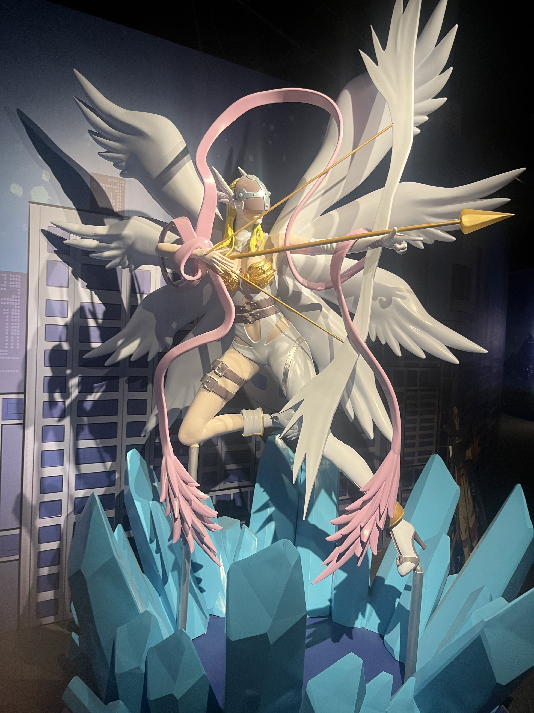
最后的最后，实际上最终的boss是所有不幸的digimon的怨念，没有人为他们伸张权利，一切都是优胜劣汰的自然法则。到这里，伴着回到现实的列车和butterfly，我和主角小队们一同回到了现实。 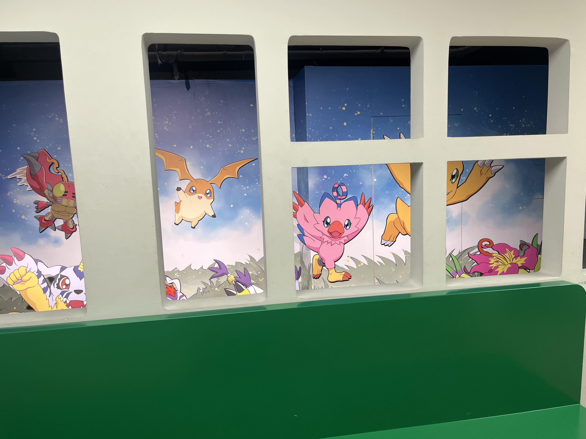
临走的时候，发现还有战斗暴龙兽的雕像 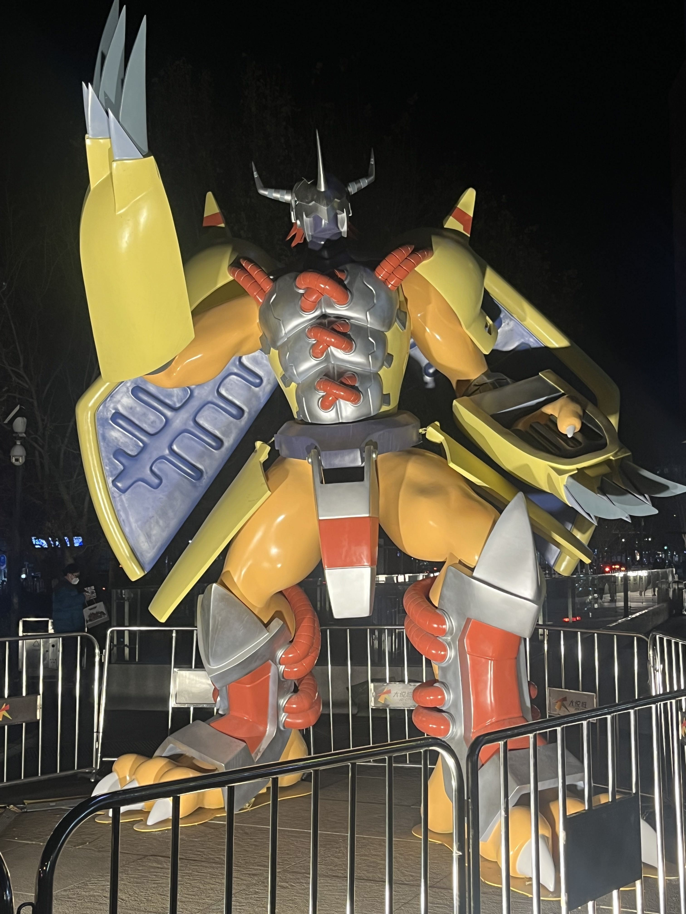
最后我买了一个盲盒，居然真的抽中了我编程的启蒙大佬光子郎： 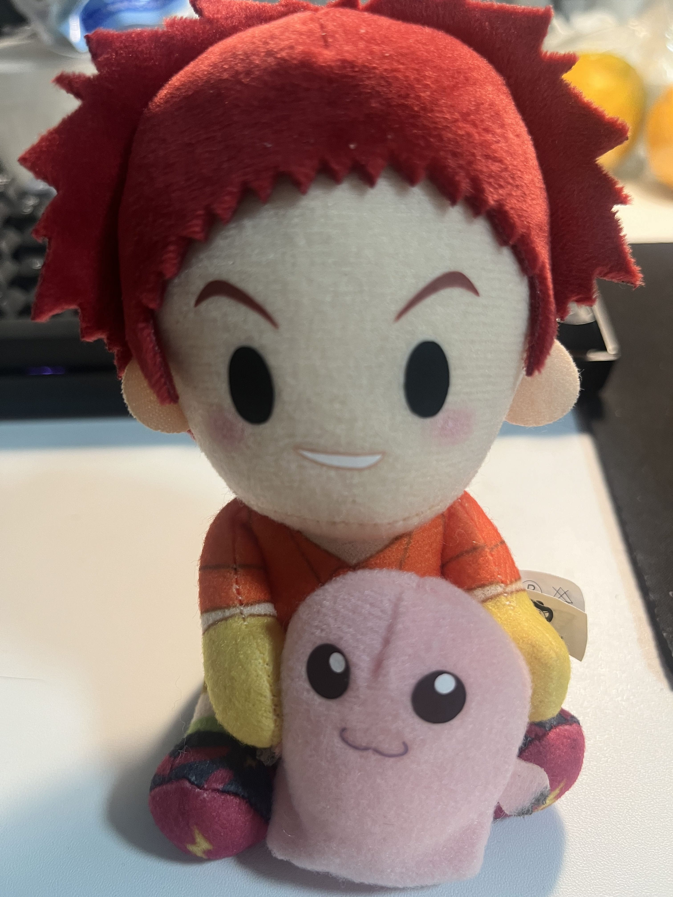